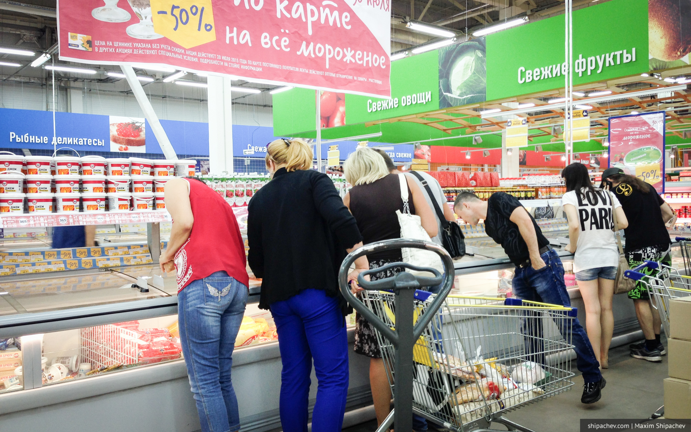
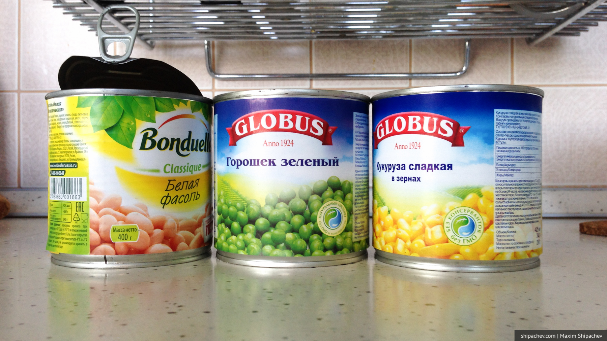

Проблеме что бы съесть, чтобы похудеть несколько десятков лет. С тех пор, как технологии развились настолько, что продукты стало возможным долго хранить и транспортировать на дальние расстояния. Города начали расти (раньше они были ограничены количеством деревень вокруг, которые кормили города).

Праноедение — философия, согласно которой для жизни человеку достаточно лишь энергии солнца (праны). Добавить здесь нечего.
Мы получили возможность питаться много и недорого. Кроме городов, расти стали животы и попы. Многие стали думать о диетах, хотя бы задумываясь о здоровье. Кто-то даже стал заниматься спортом. Кто-то даже стал питаться солнечной энергией.
До питания солнцем я пока не дожил, а тренажёрный зал в борьбе с жиром на животе помогает никак. Мой тренер Филипп ещё в начале тренировок, несколько лет назад, заметил «Хоть жопу на тренажёрах порви, живот не уйдёт».
Долгое время мой вес, колебался вокруг 82 килограмм, снижаясь во время летних путешествий, и увеличиваясь зимой. Как и у всех, моя жизнь, в части питания, делилась на период ЗОЖа (5-10 дней) и ЖОРа (15-30) дней. Я ел всё, что сладко и пил, что горит.
Последний период ЗОЖа длится уже второй месяц, вес снизился на 3 килограмма, в основном за счёт жира, и я решил написать, какие рецепты меня выручают на этот раз.
Вся моя сегодняшняя диета заключается в 3 блюдах. Их можно смело есть без каких бы то ни было ограничений.
Снежная королёва
Пачка творога, три хороших ложки 10-процентной сметаны, чайная ложка отрубей, варенье (мёд, сгущёнка).
Блюдо не нужно готовить, стараюсь есть во второй половине дня из-за содержащегося в твороге медленного белка — казеина. Можно есть и на ночь, если есть желание.
Фестиваль красок
Треть банки белой фасоли, треть банки кукурузы, треть банки зелёного горошка, 2-4 яйца. Бухаем на скороводу с растительным маслом. Я использую только нерафинированное. Отличное, богатое белком, углеводами и клетчаткой блюдо. Делаю на завтрак или обед. Белая фасоль содержит втрое меньше калорий, чем красная.

Гречко
С вечера заливаем полстакана гречки водой. Наутро гречневая каша готова к употреблению. Можно добавить немного соли.
Всё вышеперечисленное можно есть в любое время, в любом количестве, в любом порядке. Диета полноценна с точки зрения белков-жиров-углеводов, богата клетчаткой. Стоимость тоже вполне бюджетна. Два из трёх блюд — сладкие. Благодаря этому я полностью отказался от печенья-конфет-хлеба.
Разумеется, я иногда отхожу от порядка и ем макароны, запечёный картофель и даже зефир, но процентов 70 рациона составляют именно вышеперечисленные блюда.
Диету часто дополняют арбузы, огурцы, вино и кофе. Но, в смысле калорий, всем этим можно пренебречь.